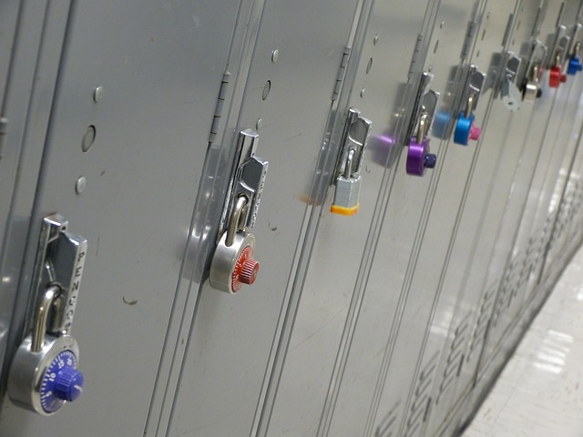

There are many great highschools in my district, but there are two that I am most interested in. One of the two high schools that I am interested in is McBride high school because I am very interested in engineering and their science programs. I am also interested in going to Lakewood high school because of their Merit program which I think will really help me into getting in a really good college. I feel like A.T.M has really helped me figure out that I enjoy things that involve computers and coding.
For college I would like to attend UCLA or Cal State Long Beach. This is because I really want to be near my family and I think these two schools seem very interesting. Also because when I was in elementary school I went to go visit those colleges and I really liked and enjoyed the programs they had. I also feel like these schools reach out to me and I have the ability to go to these schools.
When I am older I really want to be successful and happy with what I work with. I would really enjoy being a businesswoman or an engineer in computers. I am very interested in business and computers, which I believe that A.T.M has helped me see that. All the fun and interesting things that we did in A.T.M helped me realize that I truly love computers and would love to work with computers when I’m older.

When I grow up I want to have a really good career and be very happy. I also want to have a very happy family and travel all around the world. Before having a family, I want to travel places like my older sister. I really want to visit different countries and make really good memories out of them. I also have a plan of living someplace else like Brazil, Greece, Italy, or London. These are my future goals which I hope I can achieve.